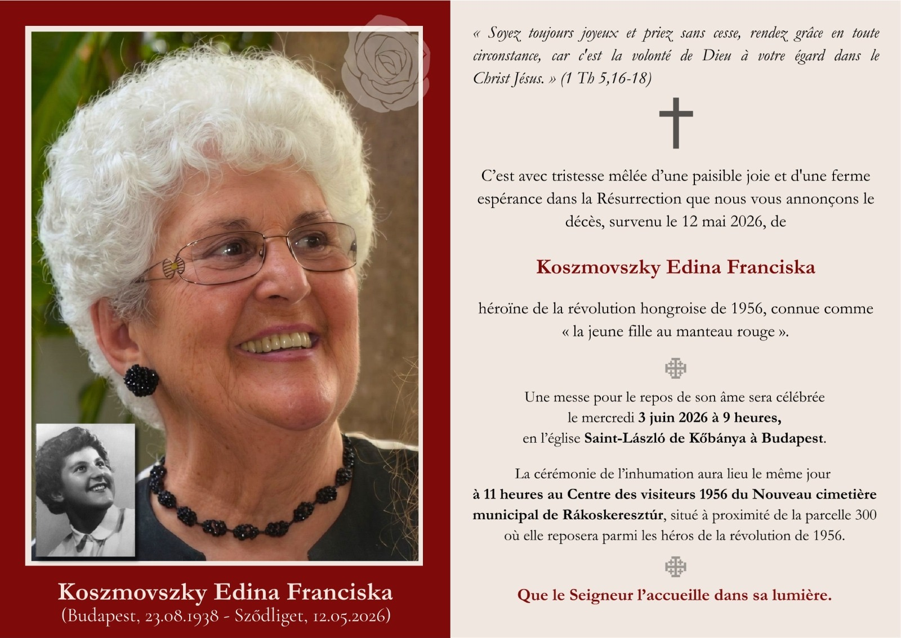
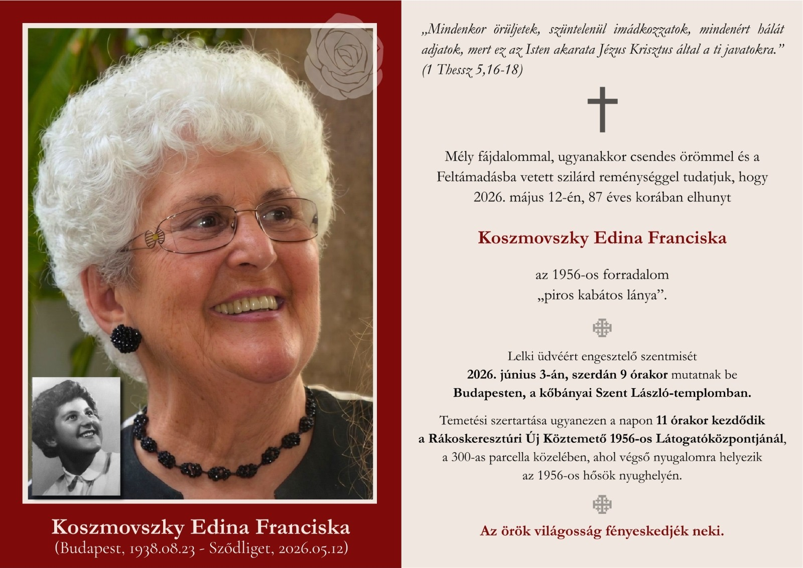
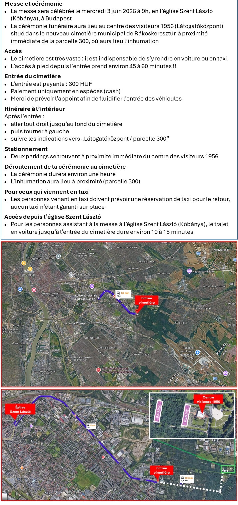
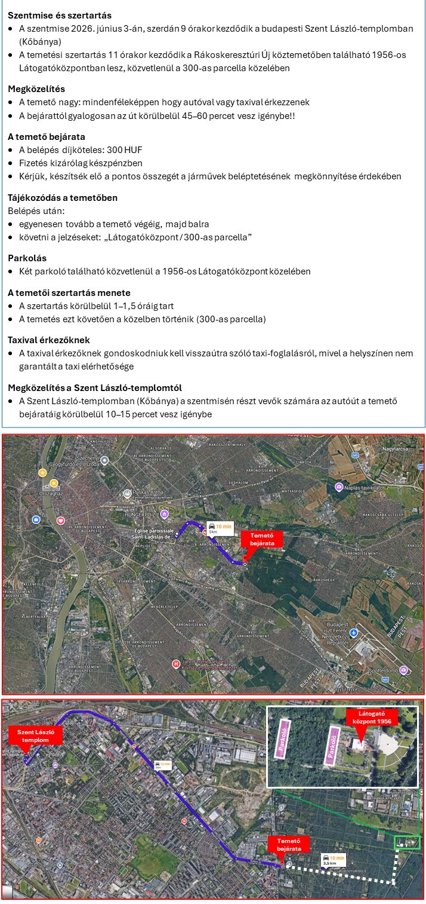

Mercredi 3 juin 2026
2026. június 3., szerda
Après l'entrée :
Opérateurs anglophones — paiement par carte accepté.
Belépés után:
Angol nyelvű diszpécser — bankkártyás fizetés elfogadott.


Entrez le code qui vous a été remis dans l'invitation.
Adja meg a meghívóban kapott kódot.
Code incorrect. Veuillez réessayer. Hibás kód. Kérjük, próbálja újra.
Que le Seigneur l'accueille dans sa lumière. Az örök világosság fényeskedjék neki.